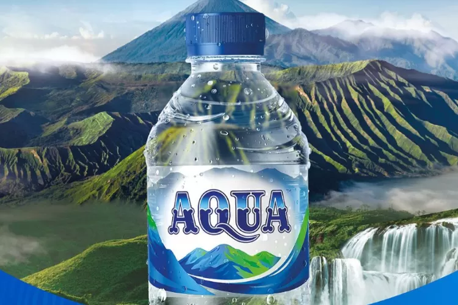

AQUA : AIR PEGUNUNGAN ASLI 100%

Kemurnian AQUA: Kandungan Air Mineral Yang Baik Untuk Tubuh
Air mineral yang baik datang dari air bawah secara natural dan menjadi sumber mata air. Ada beberapa kandungan air mineral yang baik bagi tubuh yaitu kalsium, magnesium dan sodium. Lalu apa perbedaan air mineral dengan air putih itu sendiri? Walaupun memiliki wujud, warna dan rasa yang cenderung sama. Keduanya dapat dibedakan dari segi sumber, proses pengolahan, maupun kandungannya. Seperti yang telah dijelaskan diatas, air mineral berasal dari sumber mata air pegunungan. Sedangkan air putih didapatkan dari sungai dan danau atau dari sumur. Berkat kandungan inilah air mineral memiliki banyak manfaat yang baik untuk tubuh. Apabila Anda mengkonsumsinya secara rutin, Untuk lebih jelasnya berikut ini kandungan air mineral beserta manfaat yang akan Anda dapat:
Kalsium, Kandungan kalsium yang ada pada air mineral terbukti bisa menjadi sumber kalsium yang setara dengan susu. Selain itu, magnesium dan bikarbonat yang terkandung juga di dalamnya juga dapat ikut memelihara kesehatan tulang.
Magnesium, Jantung memiliki peranan penting yaitu untuk memompa darah ke seluruh tubuh guna menunjang kelangsungan hidup. Untuk itu penting bagi kita selalu menjaganya dengan baik.
Khasiat air mineral yang satu ini diduga berasal dari tingginya kandungan magnesium di dalamnya. Hal ini dipercaya dapat menurunkan tekanan darah pada pasien hipertensi dan terbukti dapat menekan risiko terjadinya kematian akibat penyakit jantung koroner.
Selain itu, rutin mengkonsumsi air mineral yang tinggi akan bikarbonat juga baik untuk menjaga kadar kolesterol darah. Hal itu terbukti dapat menurunkan kadar lemak jahat (LDL) dan meningkatkan kadar lemak baik dalam darah (HDL). Secara tidak langsung akan menurunkan risiko terjadinya penyakit jantung koroner.
Natrium, Air mineral mengandung magnesium dan natrium, itu terbukti dapat mencegah dan mengatasi sembelit. Karena kedua kandungan tersebut dapat menarik air ke dalam rongga usus sehingga melunakkan tinja dan meningkatkan pergerakan usus.
Profil AQUA
Tentang AQUA
Merek air minum dalam kemasan yang cukup terkenal di Indonesia. Perusahaan yang memproduksi AQUA adalah PT Tirta Investama, yang merupakan anak perusahaan dari Danone, perusahaan makanan dan minuman global. Berikut adalah sejarah singkat perusahaan AQUA
Sejarah AQUA
Dimulai pada tahun 1973, ketika pemerintah Indonesia meluncurkan proyek pembangunan instalasi pengolahan air di Bukit Palasari, Tangerang. Proyek ini dimulai sebagai upaya untuk menyediakan air minum yang lebih aman dan berkualitas kepada masyarakat. Pada tahun 1974, air yang dihasilkan dari instalasi pengolahan air Bukit Palasari mulai dijual dalam kemasan botol. Ini adalah awal dari merek AQUA. Sejak itu, AQUA tumbuh dan menjadi merek air minum dalam kemasan yang terkemuka di Indonesia.
Produk AQUA
- AQUA Botol Kaca: AQUA juga memiliki produk botol kaca yang lebih ramah lingkungan, yang cocok untuk pengguna yang ingin menghindari penggunaan botol plastik sekali pakai.
- AQUA Galon: AQUA juga menyediakan air minum dalam galon berukuran 19 liter. Galon AQUA ini umumnya digunakan di rumah tangga dan perkantoran untuk digunakan dengan dispenser air.
- AQUA Botol Kecil: Selain ukuran botol yang lebih besar, AQUA juga memiliki botol berukuran lebih kecil yang umumnya tersedia dalam kemasan lebih kecil seperti 150 ml dan 330 ml. Ini cocok untuk dikonsumsi saat bepergian atau saat Anda ingin minum sedikit saja.
Penghargaan Perusahaan AQUA
- 2017: Penghargaan Kinerja Produsen dalam Pengelolaan Sampah dari Kementerian Lingkungan Hidup dan Kehutanan.
- 2018: AQUA masuk dalam jajaran “BrandZ Top 50 Most Valuable Indonesian Brand” dan mendapatkan predikat sebagai “The Most Famous Brand dari WPP and Kantar Millward Brown
- 2019: Danone-AQUA mendapatkan Penghargaan Industri Hijau 2019 untuk 15 pabrik dari Kementerian Perindustrian Republik Indonesia melalui 15 pabrik
- 2020: Anugerah Proper Emas untuk dua Pabrik Danone-AQUA dan Anugerah Proper Hijau untuk delapan Pabrik Danone-AQUA dari Kementerian Lingkungan Hidup dan Kehutanan Republik Indonesia
- Predikat Tertinggi dalam Indonesia Green & Sustainable Companies Award 2023 - Diselenggarakan oleh SWA Media Group dengan tema “Integrating Green & ESG Principles into Business: A Pathway for Sustainable Success”
Perkembangan AQUA
AQUA didirikan sebagai merek air minum dalam kemasan pada tahun 1974. Ini adalah awal dari upaya untuk menyediakan air minum yang lebih aman dan berkualitas di Indonesia. AQUA memulai operasinya dengan mengambil air dari mata air Bukit Palasari, Tangerang, dan memasarkannya dalam botol.
Seiring berjalannya waktu, AQUA terus mengembangkan jaringan distribusi mereka. Mereka meningkatkan cakupan mereka dan membuat produk mereka tersedia di seluruh Indonesia. Hal ini membantu AQUA menjadi salah satu merek air minum dalam kemasan terkemuka di Indonesia.
Pada tahun 1998, perusahaan multinasional Danone (Groupe Danone) mengakuisisi PT Tirta Investama, yang memproduksi AQUA. Akuisisi ini membantu AQUA untuk berkembang lebih lanjut dan memperluas kapabilitas produksinya.
Struktur Organisasi
Jabatan
Deskripsi Jabatan Perusahaan AQUA
| Jabatan |
Job Description |
| Dewan Komisaris |
Melakukan pengawasan atas jalannya usaha PT dan memberikan nasihat kepada direktur |
| Direktur Utama |
Memimpin perusahaan dengan menerbitkan kebijakan-kebijakan perusahaan |
| Direktur Personalia |
Bertanggungjawab terhadap disiplin kerja karyawan. |
| Direktur Produksi |
Mengendalikan semua proses produksi perusahaan. |
Layanan Perusahaan AQUA
Penyediaan Air Minum
Home Service
Peduli Lingkungan
Inovasi Produk
Contact Us
Jl. Kusuma Bakti No. 45 Jakarta 14508
PT AQUA INDONESIA
021-9770-7688
@SehatAQUA
@SehatAQUA
Website AQUA